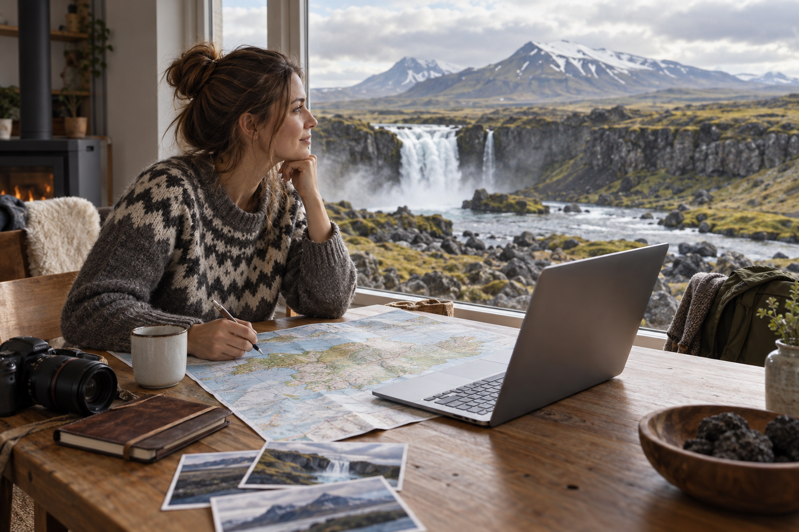
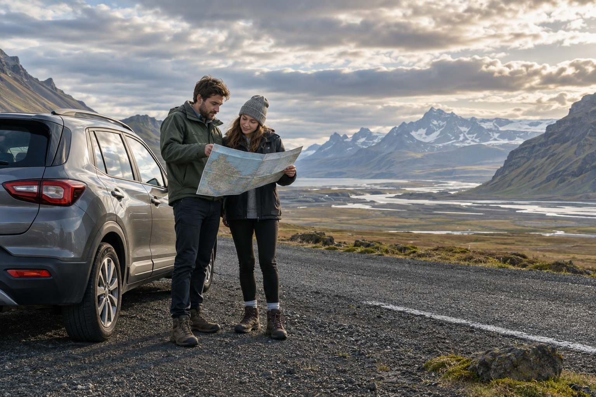
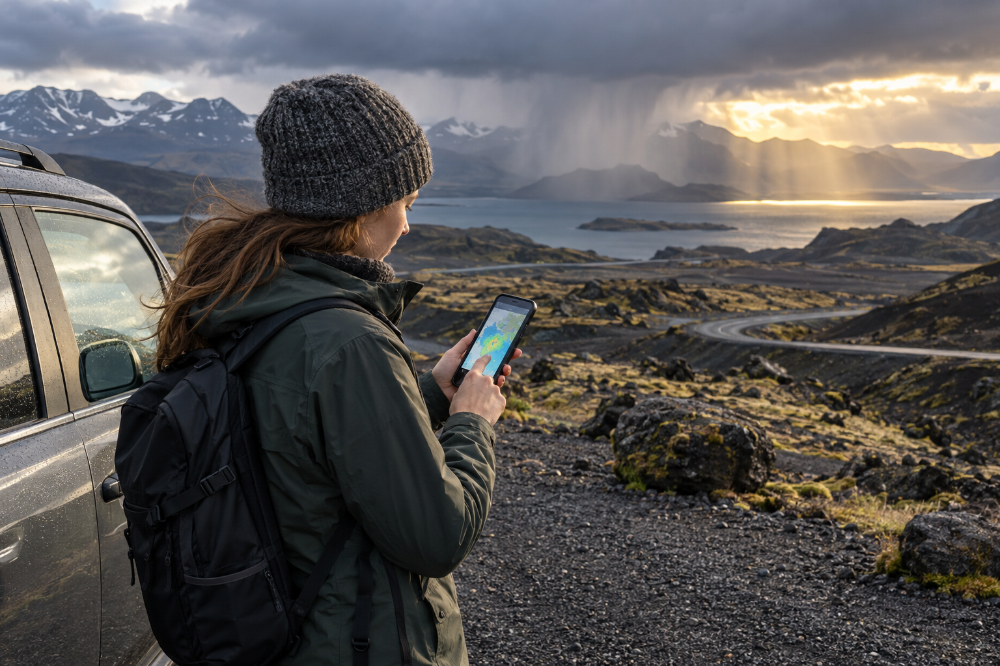

How to Plan a Trip to Iceland: Step-by-Step Guide
Planning a trip to Iceland becomes much easier when you make the major decisions in the correct order. The biggest mistake is booking flights, hotels, a rental car, and activities separately before deciding what kind of Iceland trip those bookings are supposed to create.
Start with your season and number of full days. Then decide how far you realistically want to travel, whether you will drive or use tours, and which regions deserve your time. Only after that should you lock accommodation and activities.
This step-by-step guide is for first-time visitors who want a realistic Iceland plan without unnecessary backtracking or overloaded driving days. For the broader destination overview, use Iceland Travel Guide for First-Time Visitors. This page focuses specifically on building the trip from the first decision to the final itinerary.
Step 1: Choose Your Iceland Travel Season

Choose the season before choosing the route.
This matters more in Iceland than in many city-based destinations because season affects:
- ✓Daylight
- ✓Weather
- ✓Driving conditions
- ✓Road access
- ✓Hiking
- ✓Northern Lights
- ✓Accommodation demand
- ✓How much distance you can realistically cover
A route that works comfortably in July may be too ambitious in January.
Summer: Best for Long Road Trips
Summer is the easiest season for many first-time self-drivers.
It gives you:
- ✓Very long daylight
- ✓More flexibility
- ✓Easier road-trip planning
- ✓Better conditions for longer routes
- ✓Greater access to rural areas
- ✓More time for scenic stops
If your main goal is:
- ✓Ring Road
- ✓Hiking
- ✓Long photography days
- ✓Self-driving
summer is the simplest starting point.
Summer Trade-Off
You should also expect:
- ✓Higher visitor demand
- ✓Busy famous attractions
- ✓Greater competition for accommodation
- ✓Potentially higher car and hotel prices
Do not wait until the last minute to build a peak-summer Ring Road route.
Winter: Build a Smaller Trip
Winter can be excellent, but your planning style needs to change.
Possible advantages include:
- ✓Northern Lights
- ✓Snowy scenery
- ✓Winter atmosphere
- ✓Geothermal bathing in cold weather
But you also need to plan around:
- ✓Short daylight
- ✓Snow
- ✓Ice
- ✓Wind
- ✓Reduced visibility
- ✓Road closures
- ✓Slower driving
Do not take a summer route and simply move it to January.
A winter itinerary should normally contain:
- ✓Less daily driving
- ✓More flexibility
- ✓Fewer fixed stops
- ✓More backup plans
Spring and Autumn: Plan for Transition
Spring and autumn can offer a useful middle ground.
You may get:
- ✓Fewer peak-season crowds
- ✓Changing landscapes
- ✓More moderate demand
- ✓Northern Lights potential during darker periods
But conditions can change quickly.
Treat shoulder season as its own planning category rather than assuming it behaves like summer.
A Simple Season Decision
Choose summer if your main goal is a longer self-drive trip.
Choose winter if Northern Lights and winter scenery matter more than covering large distances.
Choose spring or autumn if you value fewer peak-season visitors and can tolerate greater weather uncertainty.
The dedicated Best Time to Visit Iceland: Weather, Crowds and Costs guide will compare seasons and months in detail.
Step 2: Count Your Real Full Days
Do not count nights.
Count usable sightseeing days.
For example:
Day 1
Land at Keflavík at 4:30 PM
Day 2
Full day
Day 3
Full day
Day 4
Full day
Day 5
Flight at 9:00 AM
That is not a five-day sightseeing trip.
It is closer to:
three full days + one arrival evening.
This difference can completely change which route makes sense.
Use This Simple Duration Framework
3 Full Days
Keep the trip compact.
Focus on:
- ✓Reykjavík
- ✓Golden Circle
- ✓One carefully chosen South Coast day
Do not attempt Ring Road.
5 Full Days
A strong first trip can include:
- ✓Reykjavík
- ✓Golden Circle
- ✓South Coast
- ✓Vík
- ✓Possibly farther southeast if the route is well paced
7 Full Days
A week gives you room to explore the south and southwest more deeply.
You can consider:
- ✓Reykjavík
- ✓Golden Circle
- ✓South Coast
- ✓Southeast
- ✓Optional western extension
You do not need to force the Ring Road into seven days.
10 Full Days
This is where a first Ring Road itinerary becomes much more comfortable.
You can build around:
- ✓South Coast
- ✓Southeast
- ✓East Iceland
- ✓North Iceland
- ✓Mývatn
- ✓Akureyri
- ✓West Iceland
14 Full Days
Two weeks gives you more flexibility for:
- ✓Weather delays
- ✓Regional detours
- ✓Longer walks
- ✓Slower mornings
- ✓Additional regions
Do Not Pick an Itinerary Before Counting the Days
This order matters.
Wrong approach:
“I want to drive the Ring Road. How can I fit it into six days?”
Better approach:
“I have six full days. What route fits six days well?”
That one change usually creates a better Iceland trip.
Step 3: Decide What Type of Iceland Trip You Want
Most first-time trips fit into one of four formats.
Choose the trip style before choosing individual attractions.
Option 1: Reykjavík-Based Trip
Best for:
- ✓2–4 days
- ✓Winter
- ✓Travelers who do not want to drive
- ✓Short stopovers
- ✓First-time visitors who prefer tours
Typical structure:
Reykjavík + Golden Circle + South Coast tour
This is the simplest Iceland trip to organize.
You keep one hotel and use Reykjavík as the departure point.
Choose This Style If:
- ✓Driving does not appeal to you
- ✓You want fewer logistics
- ✓Weather is a concern
- ✓Your trip is short
Option 2: Southwest and South Coast Road Trip
For many first-time visitors, this is the strongest road-trip format.
It works especially well for:
4–7 days.
Possible route:
KEF/Reykjavík → Golden Circle → South Coast → Vík → Southeast → return
This can include:
- ✓Þingvellir
- ✓Geysir
- ✓Gullfoss
- ✓Seljalandsfoss
- ✓Skógafoss
- ✓Reynisfjara
- ✓Vík
- ✓Glacier scenery
- ✓Jökulsárlón depending on trip length
You get a large range of Iceland landscapes without committing to a full lap around the country.
Option 3: Slower Regional Trip
This works particularly well if you have about a week but do not want a fast Ring Road.
For example:
Reykjavík + Golden Circle + South Coast + Snæfellsnes
or:
Reykjavík + South Iceland in depth
The goal is:
fewer regions + better pacing.
This is a strong option for:
- ✓Families
- ✓Photographers
- ✓Couples
- ✓Travelers who dislike long daily drives
Option 4: Ring Road Trip
Choose this when you have enough time to keep daily driving reasonable.
For a first trip, around:
10 full days or more
is a much better starting point than trying to complete the circuit as quickly as possible.
The Ring Road adds:
- ✓East Iceland
- ✓North Iceland
- ✓Mývatn
- ✓Akureyri
- ✓More rural driving
- ✓More accommodation changes
This is a different trip from a Reykjavík-based holiday.
Step 4: Choose Your Priority Regions

Once you know your trip style, decide which areas are actually essential.
Do not begin with a list of 30 attractions.
Start with regions.
Reykjavík
Choose Reykjavík if you want:
- ✓City time
- ✓Museums
- ✓Food
- ✓Geothermal pools
- ✓Nightlife
- ✓Guided tours
For many first visits, one full day or arrival/departure periods is enough.
Golden Circle
Choose the Golden Circle if you want an efficient introduction to:
- ✓Þingvellir
- ✓Geothermal activity
- ✓Geysir/Strokkur
- ✓Gullfoss
It works well in:
- ✓Short trips
- ✓Winter trips
- ✓Self-drive trips
- ✓Guided-tour trips
South Coast
The South Coast should be a high priority for many first-time visitors.
It offers:
- ✓Waterfalls
- ✓Black-sand beaches
- ✓Cliffs
- ✓Glaciers
- ✓Vík
- ✓Jökulsárlón farther east
This region works particularly well on:
5–7 day trips.
Southeast Iceland
Add the southeast when you have enough time to reach it without turning the day into a marathon.
Major reasons include:
- ✓Glacier landscapes
- ✓Jökulsárlón
- ✓Diamond Beach
- ✓Vatnajökull region
The farther east you travel, the more important overnight planning becomes.
West Iceland and Snæfellsnes
A useful extension for longer regional trips.
Consider it when:
- ✓South Coast is already comfortably paced
- ✓You have roughly a week or more
- ✓You prefer regional depth to Ring Road speed
Do not add Snæfellsnes simply because you found another “must-see Iceland” list.
North Iceland
North Iceland becomes most logical when:
- ✓Ring Road is your trip structure
- ✓You have around 10 days or more
- ✓Mývatn and Akureyri matter to you
It is usually not a practical add-on to a short South Coast trip.
East Iceland
East Iceland belongs naturally in a full Ring Road itinerary.
Do not treat it only as the driving section between:
Jökulsárlón and Mývatn.
If you choose the Ring Road, give the region enough time to enjoy it.
Westfjords
Save the Westfjords for:
- ✓Longer trips
- ✓Repeat visits
- ✓Travelers intentionally seeking remote travel
Adding the Westfjords to an already rushed first Ring Road itinerary usually weakens the plan.
Step 5: Build a Route Before Choosing Hotels
This is one of the most important steps.
Do not book hotels independently.
First create:
start → overnight region → overnight region → finish
Then choose hotels inside those overnight areas.
Example: Five-Day South Iceland Trip
Your rough route might look like:
Night 1
Reykjavík
Night 2
Golden Circle or South Iceland
Night 3
Vík area
Night 4
Vík / South Coast depending route
Night 5
Reykjavík or near KEF depending flight
Only after that route makes sense should you compare actual hotels.
Why This Order Works
Accommodation availability can otherwise pull you into a bad route.
For example:
You find a cheap hotel far east.
Then you build an unrealistic day around reaching it.
That reverses the planning process.
The hotel should support the itinerary.
The itinerary should not exist to justify the hotel.
Step 6: Decide Whether You Will Drive
Now that you know your route, decide how you will travel through it.
This is better than choosing a rental car before knowing where you are going.
A Rental Car Makes Sense If:
- ✓You want independent road travel
- ✓You plan rural overnight stays
- ✓You want flexible scenic stops
- ✓You want early starts
- ✓You plan South Coast overnights
- ✓You plan Ring Road
Tours Make More Sense If:
- ✓You stay in Reykjavík
- ✓You have only a few days
- ✓You do not enjoy driving
- ✓You visit in winter and lack winter-driving experience
- ✓You want guided interpretation
Public Transport Is Not a Direct Replacement for a Road Trip
Iceland is not a destination where you should assume every waterfall and rural viewpoint is easily connected by scheduled public transport.
If you decide not to drive, build the trip around:
Reykjavík + organized tours
rather than trying to reproduce a self-drive itinerary using buses.
Step 7: Decide How Much Driving You Actually Want
This question is often more important than:
“Can I drive this route?”
A route may technically be possible.
That does not mean you will enjoy it.
Think in Total Day Length
Suppose your map shows:
3 hours of driving.
Now add:
- ✓Breakfast
- ✓Fuel
- ✓Waterfall stop
- ✓Lunch
- ✓Beach
- ✓Photography
- ✓Weather delay
- ✓Another waterfall
- ✓Hotel check-in
Your actual sightseeing day may become:
9–11 hours.
That is normal.
Do Not Set a Maximum Driving Target Every Day
A road trip becomes tiring when every day includes:
- ✓Several hours of driving
- ✓Several major attractions
- ✓Late hotel arrival
Instead, mix:
Longer Driving Day
with:
Shorter Regional Day
This creates a better rhythm.
Step 8: Check Whether Your Route Fits the Season
Now test the route against your travel month.
Ask:
- ✓Is there enough daylight?
- ✓Are the roads normally practical for this season?
- ✓Am I relying on mountain roads?
- ✓Do I have winter-driving experience?
- ✓Is the route too long if weather slows us down?
Summer Route
Can generally support:
- ✓More distance
- ✓Later sightseeing
- ✓Ring Road
- ✓More rural accommodation
Winter Route
Should usually include:
- ✓Shorter distances
- ✓Less fixed timing
- ✓More weather margin
- ✓Easier fallback options
Shoulder-Season Route
Needs flexibility because conditions may shift between summer-like and winter-like patterns.
Step 9: Leave Space for Weather
Do this before booking the rest of the trip.
Do not create an itinerary where missing one activity destroys the entire route.
A better Iceland plan contains:
- ✓Priority stops
- ✓Optional stops
- ✓Things you can remove
- ✓Some time margin
Label Stops by Priority
A simple system is:
Must Do
The main reason you chose the region.
Would Like to Do
Important but removable if conditions change.
Optional
Use only if you have time and energy.
This prevents bad decisions later.
If weather delays you, remove:
optional stops first.
Do not respond by driving faster.
Step 10: Check Official Conditions During Planning

An Iceland route is never completely finished months before departure.
Some decisions should remain provisional until close to the trip.
Useful official information includes:
- ✓Road conditions
- ✓Weather
- ✓Safety alerts
- ✓Closures
- ✓Volcanic access
- ✓Hiking warnings
SafeTravel currently advises visitors to monitor travel conditions because Icelandic weather and roads can change quickly.
For remote travel, SafeTravel also offers a travel-plan system so route information can be available if search-and-rescue assistance becomes necessary.
Do Not Treat an Old Blog Post as a Live Safety Source
A guide can help you design the trip.
It cannot tell you whether:
- ✓A road is closed today
- ✓A hiking trail is unsafe today
- ✓A volcanic area is open today
Use current official information for current conditions.
Step 11: Create the Skeleton Before Booking Anything Expensive
At this stage, your plan should look something like this:
| Decision | Example |
|---|---|
| Season | July |
| Full days | 7 |
| Trip style | South/Southwest self-drive |
| Main regions | Reykjavík, Golden Circle, South Coast |
| Transport | Rental car |
| Furthest point | Southeast Iceland |
| Driving preference | Moderate |
| Weather flexibility | Yes |
| Ring Road | No |
Only now should the trip move into detailed booking.
That sequence helps prevent:
- ✓Wrong rental vehicle
- ✓Poor hotel locations
- ✓Excessive driving
- ✓Unnecessary hotel changes
- ✓Paying for activities that do not fit the route
Example: How a First-Time Plan Develops
Imagine you start with:
“I want to visit Iceland for one week.”
Do not immediately search for:
7-day Iceland itinerary.
Work through the decisions.
First Question
When are you going?
Answer:
September.
Second Question
How many full days?
Answer:
Six full sightseeing days plus arrival evening.
Third Question
Self-drive or tours?
Answer:
Self-drive.
Fourth Question
Main priority?
Answer:
Waterfalls, glaciers, and landscapes.
Fifth Question
Ring Road?
With six full days:
No.
Better Route
Now your trip becomes:
Reykjavík → Golden Circle → South Coast → Vík → Southeast → return
This is much more useful than beginning with a generic attraction list.
Another Example: Winter First Trip
Suppose you have:
four full days in February.
Priorities:
- ✓Northern Lights
- ✓Golden Circle
- ✓South Coast
- ✓No winter-driving experience
A sensible trip shape could be:
Reykjavík base + organized tours
instead of renting a car and attempting a multi-hotel road trip.
Same country.
Different season.
Different trip.
That is why Iceland planning needs to happen in order.
The Planning Sequence to Remember
Before booking your first rural hotel, answer:
- ✓When am I going?
- ✓How many full days do I have?
- ✓What type of trip do I want?
- ✓Which regions are priorities?
- ✓How far should I travel?
- ✓Will I drive or use tours?
- ✓How much driving am I comfortable with?
- ✓Does that route fit the season?
- ✓Where can I leave flexibility?
Once those decisions are clear, the rest of the Iceland trip becomes much easier to organize.
Step 12: Check Passport and Entry Requirements Before Booking
Before paying for non-refundable flights, confirm that you can enter Iceland for your planned dates.
Iceland is part of the Schengen Area.
Whether you need a visa depends on factors such as:
- ✓Nationality
- ✓Passport or travel document
- ✓Length of stay
- ✓Purpose of travel
- ✓Previous time spent inside the Schengen Area
Do not rely on a travel blog for your final visa decision.
Use Iceland's current official immigration information for your passport.
If You Need a Schengen Visa
Start the process early enough to allow for:
- ✓Application appointment
- ✓Supporting documents
- ✓Processing
- ✓Possible requests for additional information
Do not book an expensive non-refundable Iceland road trip before understanding your visa requirements.
If You Do Not Need a Visa
Visa-free entry does not mean there are no entry conditions.
Check:
- ✓Passport validity
- ✓Maximum permitted stay
- ✓Any current entry requirements
For short visits, the Schengen 90 days in any 180-day period rule may be relevant depending on your status.
Why This Step Comes Before Flights
The wrong order is:
flight → rental car → hotels → visa research
The safer order is:
entry requirements → travel dates → flights → route bookings
That prevents expensive problems later.
Step 13: Choose Flights Around the Actual Iceland Itinerary
For most international visitors, the main airport is:
Keflavík International Airport (KEF).
KEF is outside Reykjavík.
Do not treat:
flight arrival time
as:
hotel arrival time.
You still need:
- ✓Immigration where applicable
- ✓Baggage collection
- ✓Rental-car pickup or transfer
- ✓Travel from KEF
- ✓Hotel check-in
Look at Flight Times, Not Only Ticket Price
A cheaper flight may be worse if it:
- ✓Lands very late
- ✓Requires an extra hotel night
- ✓Creates a difficult winter drive
- ✓Forces you to collect a rental car while exhausted
- ✓Leaves too little time before your first rural hotel check-in
The best flight is not always the lowest fare.
A Useful Arrival Flight
For a self-drive trip, arriving earlier can give you time to:
- ✓Collect the vehicle
- ✓Buy groceries
- ✓Understand the car
- ✓Reach the first accommodation in daylight
That can be more valuable than saving a small amount on a late-night flight.
Step 14: Decide What Arrival Day Is For
Do not leave arrival day undefined.
Choose one of three roles.
Option 1: Reykjavík Arrival Day
Best for many first-time visitors.
Plan:
KEF → Reykjavík → check-in → easy city evening
This is especially useful after:
- ✓Long-haul flight
- ✓Overnight flight
- ✓Winter arrival
You begin the road trip the next morning after resting.
Option 2: Start the Road Trip Immediately
This can work if:
- ✓You land early
- ✓You are rested
- ✓Conditions are good
- ✓Your first hotel is not far away
- ✓You are comfortable driving
Do not make the first day:
international flight + car pickup + five-hour drive.
Option 3: Reykjanes Arrival Day
Depending on current access and conditions, you may use arrival day for selected Reykjanes Peninsula stops before continuing to Reykjavík or another nearby base.
This only works if:
- ✓Flight timing is favorable
- ✓Current access is open
- ✓You are not rushing
Do not lock this plan months ahead without checking current local conditions.
Step 15: Plan Your KEF Airport Transfer
If you are not collecting a car immediately, decide how you will reach Reykjavík.
Main options include:
- ✓Airport coach
- ✓Public bus
- ✓Taxi
- ✓Rental car
Airport Coach
A dedicated airport coach is straightforward for many visitors.
It can work well when:
- ✓Reykjavík is your first base
- ✓You do not need a car that day
- ✓You have normal luggage
Public Bus
Public transport can be cheaper.
But compare:
- ✓Travel time
- ✓Luggage
- ✓Arrival hour
- ✓Hotel location
before deciding.
Taxi
A taxi may make more sense for:
- ✓Groups
- ✓Families
- ✓Heavy luggage
- ✓Late arrivals
Compare total group cost rather than only the per-person coach fare.
Rental Car
Collecting the car at KEF works well when your road trip starts immediately.
Do not rent from the airport automatically if the vehicle will sit unused during two Reykjavík days.
Step 16: Decide When to Collect the Rental Car
This can save both money and inconvenience.
Collect at KEF If:
- ✓You leave Reykjavík immediately
- ✓Your first hotel is outside the capital
- ✓You need the car for almost every day
- ✓Your route begins on the Reykjanes Peninsula
Collect Later If:
- ✓You spend one or two days in Reykjavík first
- ✓You plan city sightseeing without a car
- ✓Parking adds unnecessary cost
- ✓You use organized tours initially
For example:
Day 1
Arrive → Reykjavík
Day 2
Reykjavík
Day 3
Collect car → begin road trip
This can be more efficient than paying for a vehicle during the first two days.
Step 17: Choose the Vehicle From the Route
Do not choose a car based only on:
- ✓Appearance
- ✓Cheapest daily rate
- ✓Biggest SUV
- ✓Social-media recommendations
The route should determine the vehicle.
Consider:
- ✓Season
- ✓Number of travelers
- ✓Luggage
- ✓Road type
- ✓Highlands plans
- ✓Automatic vs manual
- ✓Rental-company restrictions
When a Normal 2WD May Be Enough
For many summer trips centered on:
- ✓Reykjavík
- ✓Golden Circle
- ✓South Coast
- ✓Main Ring Road sections
a normal vehicle may be suitable, subject to current road conditions and rental terms.
When a 4WD Becomes More Relevant
A 4WD may make more sense when:
- ✓Your approved route requires one
- ✓You plan permitted Highland roads
- ✓Season and conditions justify it
- ✓You want additional ground clearance
But:
4WD does not make closed roads open.
It also does not make dangerous weather safe.
Step 18: Understand F-Roads Before Adding Them
Do not casually add an F-road because your rental vehicle says:
4x4.
Highland roads are a separate type of travel.
They may involve:
- ✓Rough surfaces
- ✓Limited services
- ✓Seasonal opening
- ✓River crossings
- ✓Specific vehicle requirements
Some rental agreements restrict exactly where particular vehicles can go.
If the Highlands are important, design that route deliberately.
Do not discover at the rental counter that your planned road is not allowed.
Step 19: Compare Rental Car Terms, Not Just the Headline Price
Two rental cars with similar daily rates can have very different final costs.
Check:
- ✓Insurance
- ✓Mileage
- ✓Fuel policy
- ✓Deposit
- ✓Additional driver
- ✓Airport fee
- ✓Gravel coverage
- ✓Wind-related damage rules
- ✓Sand and ash coverage
- ✓F-road permissions
- ✓Breakdown assistance
- ✓Cancellation terms
The cheapest listing is not automatically the cheapest rental.
Photograph the Vehicle
At pickup, inspect:
- ✓Body
- ✓Windshield
- ✓Wheels
- ✓Lights
Document existing damage according to the rental company's process.
Do the same when returning the vehicle if practical.
The dedicated Renting a Car in Iceland: 2WD vs 4WD, Insurance and Costs guide will cover the full rental decision separately.
Step 20: Book the Hardest Accommodation First
Do not necessarily start with Reykjavík.
Start with the nights that are most difficult to replace.
These are often rural locations where your route depends on staying in a specific area.
For example, on a South Coast trip, an overnight in the right part of:
- ✓Vík area
- ✓Southeast Iceland
- ✓Golden Circle region
may matter more than choosing your Reykjavík hotel first.
Why Rural Accommodation Matters
If the intended overnight location sells out, you may have to stay:
- ✓Much farther west
- ✓Much farther east
- ✓Away from the main route
That can add significant driving the next day.
So book:
route-critical rural accommodation first.
Step 21: Balance the Overnight Stops
Every hotel should solve a route problem.
Ask:
Why am I sleeping here?
A good answer might be:
- ✓It breaks a long South Coast drive
- ✓It positions us for Jökulsárlón tomorrow
- ✓It keeps tomorrow's Ring Road section manageable
- ✓It gives us two nights in one region for weather flexibility
A poor answer is:
“The hotel looked nice.”
A beautiful property can still create a bad route.
Step 22: Avoid Changing Hotels Every Night Without a Reason
Road trips naturally involve hotel changes.
But that does not mean you need a new room every night.
Two-night stays can be useful around areas where you want:
- ✓Slower sightseeing
- ✓Hiking
- ✓Weather flexibility
- ✓Less packing
When One-Night Stays Make Sense
They are normal when:
- ✓Progressing around the Ring Road
- ✓Moving steadily down the South Coast
- ✓Distances require it
When Two Nights Are Better
Consider two nights when:
- ✓The region contains many attractions
- ✓Weather could disrupt plans
- ✓Your group dislikes constant packing
- ✓You want one slower day
Step 23: Check What the Accommodation Actually Includes
Rural lodging can differ significantly.
Before booking, check:
- ✓Private or shared bathroom
- ✓Breakfast
- ✓Restaurant
- ✓Kitchen
- ✓Parking
- ✓Check-in hours
- ✓Late-arrival procedure
- ✓Cancellation policy
Do not assume every guesthouse works like a full-service hotel.
Pay Attention to Dinner
This matters more than first-time visitors expect.
If you arrive in a small town at:
9:30 PM
you may discover that:
- ✓Restaurant kitchens are closed
- ✓Your accommodation does not serve food
- ✓The supermarket has closed
Plan the evening meal before starting a long driving day.
Step 24: Check Cancellation Terms
Flexible bookings can be particularly useful in Iceland.
Weather may force route changes.
That does not mean every reservation should be refundable at any price.
But when two hotels are similar, flexible cancellation can have real value.
This becomes more important for:
- ✓Winter
- ✓Shoulder seasons
- ✓Long road trips
- ✓Remote regions
Step 25: Create a First Budget Before Adding Activities
Do this before you begin booking expensive experiences.
Start with the large fixed categories:
- ✓Flights
- ✓Accommodation
- ✓Rental car or tours
- ✓Fuel
- ✓Food
Then add:
- ✓Activities
- ✓Parking
- ✓Geothermal bathing
- ✓Museums
- ✓Insurance
- ✓Airport transfer
Why Budget Now?
Because this is where travelers discover whether the original plan is realistic.
You may realize that:
10-day 4WD trip + premium hotels + restaurant meals + multiple guided activities
is far above your expected budget.
It is easier to adjust the trip now than after everything is booked.
Step 26: Decide Where to Spend and Where to Save
Not every category needs to be premium.
For example:
Spend More On
- ✓Correct rental vehicle
- ✓Well-located rural accommodation
- ✓One high-priority activity
Save On
- ✓Some lunches
- ✓Groceries
- ✓Simple guesthouses
- ✓Local swimming pools instead of several luxury lagoons
Choose according to your priorities.
Do not compromise safety equipment or suitable transport only to protect a restaurant budget.
Step 27: Budget Fuel Separately
Fuel can become a meaningful road-trip cost.
The longer your route:
- ✓The more fuel you need
- ✓The more vehicle efficiency matters
Do not treat fuel as an invisible cost already included in the rental rate.
Rough Planning Method
Before booking:
- ✓Estimate the route distance.
- ✓Add reasonable detours.
- ✓Check your vehicle's expected fuel use.
- ✓Use current fuel prices closer to travel.
You do not need perfect precision.
You need enough accuracy to understand the scale of the trip.
Step 28: Decide Which Paid Experiences Truly Matter
Iceland can become expensive quickly if you book an activity every day.
Start by choosing the experiences you would genuinely regret missing.
Examples may include:
- ✓Glacier hike
- ✓Ice cave
- ✓Whale watching
- ✓Horse riding
- ✓Geothermal lagoon
- ✓Northern Lights tour
- ✓Snorkeling or diving where suitable
- ✓Guided Highlands experience
You do not need all of them.
The landscapes themselves are a large part of the Iceland experience.
Step 29: Place Fixed Activities Carefully
A timed activity changes the flexibility of the day.
That matters in Iceland.
For example, if you book:
glacier tour at 1:00 PM
you now have an appointment that determines the day's route.
That can be fine.
But avoid creating:
9 AM activity → 12 PM reservation → 3 PM reservation → 7 PM hotel
on a weather-dependent road trip.
Better Rule
Use:
one major fixed commitment per day
when possible.
Then keep the surrounding sightseeing flexible.
Step 30: Book Weather-Sensitive Experiences With the Route in Mind
Some experiences are more affected by conditions than others.
If a major activity is one of your trip priorities, consider:
- ✓Cancellation policy
- ✓Rescheduling possibilities
- ✓Where you sleep before and after
- ✓Whether another day could work as backup
Do not put a once-in-a-lifetime experience:
90 minutes before a long mandatory drive.
Give the day room.
Step 31: Do Not Schedule the Northern Lights Like a Museum
If you travel during aurora season, treat Northern Lights viewing as an opportunity rather than a guaranteed appointment.
Build several possible nights.
You may see them:
- ✓From rural accommodation
- ✓During an organized tour
- ✓While checking conditions during the road trip
Cloud cover can change everything.
Do not structure the entire itinerary around one specific aurora night.
Step 32: Add Geothermal Bathing Where It Fits Naturally
Do not choose every lagoon first and then bend the road trip around them.
Instead, ask:
Where would a pool or geothermal bath fit naturally?
Good moments include:
- ✓Arrival day
- ✓Reykjavík evening
- ✓After a hiking day
- ✓Slower road-trip afternoon
A local swimming pool may fit the itinerary better than driving far for a famous spa.
Step 33: Plan Food Before Long Rural Days
You do not need a restaurant itinerary.
You do need a food strategy.
A Practical Road-Trip Approach
Breakfast
Hotel or guesthouse
Lunch
Cafe, bakery, roadside restaurant, or packed food
Snacks
Supermarket supplies
Dinner
Restaurant or accommodation near the overnight stop
This reduces the risk of reaching a small town late with no convenient meal option.
Step 34: Make a Grocery Stop Early
For a self-drive trip, buying basic supplies near the beginning can make the route much easier.
Useful items may include:
- ✓Water
- ✓Fruit
- ✓Skyr
- ✓Bread
- ✓Sandwich ingredients
- ✓Snacks
- ✓Simple breakfast items
This does not mean eating every meal from a supermarket.
It gives you options.
Step 35: Build the Day-by-Day Itinerary From Geography
Now you are ready to make the detailed itinerary.
Do not organize it by:
most famous attractions first.
Organize it by:
geography.
Example
A poor day might be:
Golden Circle → Reykjavík → South Coast
because you are moving inefficiently.
A better structure is:
Reykjavík → Golden Circle → overnight farther south
if the next day continues toward the South Coast.
Each day should move naturally toward the next overnight stop.
Step 36: Give Every Day One Main Geographic Theme
This keeps the itinerary readable and realistic.
For example:
Day 1
Reykjavík
Day 2
Golden Circle
Day 3
Western South Coast
Day 4
Vík and Southeast
Day 5
Southeast / return progression
A day can contain several attractions.
But they should belong to the same broad route.
Step 37: Set a Daily Priority, Not a Daily Checklist
For each day, define:
Main Priority
The experience you most want to protect.
Secondary Stops
Important but adjustable.
Optional Stops
Remove if:
- ✓Weather changes
- ✓You are tired
- ✓Driving takes longer
- ✓A major attraction deserves more time
This is much more useful than writing:
8:17 AM waterfall → 9:42 AM viewpoint → 11:05 AM beach.
Step 38: Add Realistic Stop Time
Do not assume every waterfall takes:
15 minutes.
Your time includes:
- ✓Parking
- ✓Walking
- ✓Viewing
- ✓Photos
- ✓Toilet
- ✓Returning to the car
A stop that looks quick online may take:
45–90 minutes
without feeling slow.
Use Broad Time Blocks
Instead of:
Skógafoss 10:20–10:45
use:
Skógafoss: late morning
That creates enough structure without fake precision.
Step 39: Add Meal and Fuel Stops to the Itinerary
They are part of the route.
A day is not:
3 hours driving + attractions.
It is:
driving + attractions + meals + fuel + toilets + weather + parking.
If you ignore these details during planning, every day becomes longer than expected.
Step 40: Protect the End of the Day
Do not repeatedly plan to reach accommodation at the last possible check-in minute.
Aim for enough margin that:
- ✓Weather delay is manageable
- ✓You can eat dinner
- ✓You are not driving exhausted
- ✓You can find the property calmly
This becomes especially important during:
- ✓Winter
- ✓Remote travel
- ✓Short daylight
Step 41: Keep Arrival and Departure Days Light
Do not put essential experiences on them unless timing is very safe.
Arrival Day
Good for:
- ✓Reykjavík
- ✓Grocery shopping
- ✓Geothermal pool
- ✓Short Reykjanes stop if conditions allow
Departure Day
Good for:
- ✓Breakfast
- ✓Short nearby stop
- ✓Returning rental car
- ✓Airport
Do not put:
your number-one waterfall
on the morning of an international flight.
Step 42: Work Backward From Your Flight Home
Departure logistics can improve the final nights.
Ask:
- ✓Flight time
- ✓Rental-car return time
- ✓Drive to KEF
- ✓Fuel return requirements
- ✓Check-in time
- ✓Weather margin
Early Flight
Consider staying:
- ✓Reykjavík
- ✓Reykjanes
- ✓Near KEF
depending on departure time.
Afternoon or Evening Flight
You may have more flexibility.
But do not use every available minute.
Protect the flight.
Step 43: Check Rental-Car Return Logistics
Before the last day, understand:
- ✓Exact return location
- ✓Office hours
- ✓Shuttle if needed
- ✓Fuel requirement
- ✓Inspection process
Do not discover these details in the airport parking area while your flight check-in clock is running.
Step 44: Review the Whole Trip for Backtracking
Once the draft is complete, look at the route as one line.
Ask:
Am I repeatedly driving the same road only because of my hotel choices?
Some backtracking is unavoidable, especially on a South Coast trip.
But excessive backtracking may indicate:
- ✓Wrong overnight location
- ✓Too many Reykjavík returns
- ✓Poor attraction order
Fix the route before finalizing every booking.
Step 45: Review the Trip for Overbooking
Count your fixed commitments.
If every day has:
- ✓Hotel deadline
- ✓Tour
- ✓Dinner reservation
- ✓Spa reservation
- ✓Long drive
the itinerary is too rigid.
Iceland needs room for:
- ✓Weather
- ✓Closures
- ✓Longer stops
- ✓Rest
Remove commitments that do not add enough value.
Step 46: Check Whether the Budget Still Works
Now return to your budget.
By this stage, you know:
- ✓Approximate hotels
- ✓Rental car
- ✓Driving distance
- ✓Activities
This is the right time to make meaningful adjustments.
Possible changes include:
- ✓Smaller vehicle
- ✓Different hotel category
- ✓Fewer paid activities
- ✓More supermarket meals
- ✓Shorter trip
- ✓Different season
The dedicated Iceland Trip Cost: Budget for 3, 5, 7 and 10 Days guide will handle detailed trip budgets.
Step 47: Create Your Final Booking Order
Once the route works, book in this order when practical:
- ✓Flights
- ✓Route-critical rural accommodation
- ✓Rental car or main tour transport
- ✓Remaining accommodation
- ✓High-priority guided activities
- ✓Popular geothermal experiences
- ✓Optional reservations
This order can change if you find:
- ✓Rare award availability
- ✓Special event
- ✓Unusual flight deal
But the principle stays the same:
lock the parts that can break the route first.
Step 48: Save Every Important Booking Offline
Before departure, keep copies of:
- ✓Flight details
- ✓Hotel addresses
- ✓Rental booking
- ✓Tour reservations
- ✓Insurance
- ✓Passport information where appropriate
- ✓Emergency contacts
Do not rely on one email app with internet access.
Save important information:
- ✓Offline
- ✓Screenshot
- ✓PDF
in a secure place you can access during the trip.
Step 49: Make a Simple Master Itinerary
Your final itinerary does not need to be complicated.
For each day, record:
- ✓Start point
- ✓Main region
- ✓Main priority
- ✓Approximate driving
- ✓Overnight location
- ✓Fixed booking
- ✓Optional stops
For example:
| Day | Main Plan | Overnight |
|---|---|---|
| 1 | Arrive KEF → Reykjavík | Reykjavík |
| 2 | Golden Circle | South Iceland |
| 3 | Seljalandsfoss → Skógafoss → Vík | Vík |
| 4 | Southeast / glacier region | Southeast |
| 5 | Return progression | Reykjavík |
That is far more useful on the road than a minute-by-minute spreadsheet.
Step 50: Keep the Final Itinerary Editable
Your trip plan should be a guide.
It should never become a reason to make an unsafe decision.
If:
- ✓Weather worsens
- ✓Road closes
- ✓Someone becomes tired
- ✓A stop takes longer
edit the itinerary.
That is not a failed trip.
That is good Iceland planning.
The Booking-Phase Rule to Remember
Once your route is geographically realistic, protect it in this order:
legal entry → flights → transport → route-critical accommodation → important activities → flexible extras
Then build each day around:
one main region + one main priority + enough time to change the plan.
That creates a trip you can actually use after arriving in Iceland.
Step 51: Build Your Packing List Around the Season and Activities
Do not pack for Iceland using a generic European vacation list.
Your clothing needs to match:
- ✓Season
- ✓Weather
- ✓Road-trip style
- ✓Hiking plans
- ✓Guided activities
- ✓Amount of outdoor sightseeing
For most trips, think in layers rather than one very heavy coat.
A practical system is:
base layer → insulating layer → windproof/waterproof outer layer
This lets you adjust throughout the day.
Basic Clothing Categories
Most travelers should consider:
- ✓Waterproof jacket
- ✓Warm insulating layer
- ✓Comfortable walking shoes
- ✓Warm socks
- ✓Hat
- ✓Gloves
- ✓Daypack
- ✓Swimwear
Season and activities determine how much more you need.
Why Waterproof Clothing Matters
Rain is only part of the problem.
Wind can make an ordinary umbrella difficult to use.
A waterproof jacket with a hood is often far more practical for:
- ✓Waterfalls
- ✓Coastal stops
- ✓Rain
- ✓Wind
Waterproof trousers may also be useful for travelers spending long periods outdoors.
The dedicated What to Pack for Iceland: First-Time Visitor Packing List will cover clothing and seasonal gear in detail.
Step 52: Pack Swimwear Whatever the Season
This is easy to forget on a winter trip.
Iceland's geothermal pools operate throughout the year.
Swimwear can be useful for:
- ✓Reykjavík pools
- ✓Local swimming pools
- ✓Geothermal lagoons
- ✓Hotel hot tubs
Do not assume cold weather means you will not swim.
Step 53: Pack for the Car as Well as the Weather
A road trip needs a few practical items beyond clothing.
Useful examples include:
- ✓Charging cable
- ✓Power bank
- ✓Reusable water bottle
- ✓Sunglasses
- ✓Small snacks
- ✓Secure phone mount if allowed by your rental setup
- ✓Offline copies of bookings
In winter, your rental company should provide equipment appropriate to the vehicle and legal requirements.
Do not bring random driving equipment and assume it replaces a properly prepared rental car.
Step 54: Check Travel Insurance Before Departure
Travel insurance deserves more attention on an Iceland trip because weather and outdoor activities can affect your plans.
Check whether your policy covers the parts of the trip that matter to you.
Possible areas include:
- ✓Medical emergencies
- ✓Trip interruption
- ✓Flight disruption
- ✓Lost luggage
- ✓Rental-car excess
- ✓Hiking
- ✓Glacier tours
- ✓Winter activities
Read the policy wording.
Do not assume:
“adventure activities included”
means every activity on your itinerary is covered.
Travel Insurance and Rental-Car Insurance Are Different
Your travel-insurance policy may provide some rental-car coverage.
The rental company may offer its own protection.
These are not automatically identical.
Before declining any rental coverage, understand:
- ✓What your policy covers
- ✓Excess amount
- ✓Exclusions
- ✓Claims process
The later Renting a Car in Iceland: 2WD vs 4WD, Insurance and Costs guide will handle rental-specific protection in detail.
Step 55: Make Sure Your Phone Will Work in Iceland
Your phone is not only for social media or navigation.
It can be an important safety tool.
Before departure, confirm:
- ✓International roaming
- ✓Local SIM/eSIM if needed
- ✓Device compatibility
- ✓Charging setup
Iceland has been phasing out older mobile network technology, so travelers with older devices should check compatibility before relying on the phone for emergency communication.
Save Important Information Offline
Keep offline copies of:
- ✓Hotel addresses
- ✓Rental company details
- ✓Flight information
- ✓Tour bookings
- ✓Insurance details
- ✓Emergency contacts
Screenshots are useful.
Do not depend entirely on:
email + mobile signal.
Step 56: Save Iceland's Emergency Number
Iceland's emergency number is:
112
Save it before traveling.
112 can coordinate emergency assistance such as:
- ✓Police
- ✓Fire
- ✓Ambulance
- ✓Search and rescue
The current 112 service also supports contact through its official app and web chat.
At the time of writing, Icelandic authorities also advise saving:
+354 599 0112
as a backup number if a normal 112 call cannot connect properly during the country's mobile-network transition.
Because communication systems can change, verify this shortly before departure.
Step 57: Consider the 112 Iceland App
The official 112 Iceland app can help communicate with emergency services.
Its current features can help transmit information about:
- ✓The situation
- ✓Your location
This may be useful when explaining exactly where an incident happened is difficult.
It does not replace normal trip preparation.
You should still know:
- ✓Your road
- ✓Nearby attraction
- ✓Direction of travel
- ✓Accommodation
whenever possible.
Step 58: Download SafeTravel Before the Trip
SafeTravel is one of the most useful Iceland-specific safety resources.
Its current app and website provide access to:
- ✓Travel alerts
- ✓Weather-related information
- ✓Road-condition information
- ✓Safety notices
For hiking and trekking, its current app can also help send GPS location information to emergency services.
Do not wait until a serious weather day to discover how the service works.
Open it before the trip.
Step 59: Know the Three Sources of Information You Need
Do not rely on one app for every decision.
Before driving, separate the information into three categories.
Navigation
Answers:
How do I get there?
Use your preferred navigation system.
Road Conditions
Answers:
What is happening on the road?
Iceland's official traffic information service provides:
- ✓Road-condition notices
- ✓Closures
- ✓Traffic information
- ✓Road cameras
- ✓Weather measurements on roads
Weather
Answers:
What conditions are developing?
Use the Icelandic Meteorological Office for official forecasts and warnings.
These three sources answer different questions.
A navigation app saying the road exists does not mean current conditions make it wise to drive.
Step 60: Download Offline Maps
Offline maps can be useful when:
- ✓Mobile coverage weakens
- ✓You enter remote areas
- ✓Your data connection fails
Download the main regions before leaving your hotel Wi-Fi.
But remember:
offline map ≠ current road condition.
It can show where the road goes.
It cannot reliably tell you whether that road is currently closed.
Step 61: Check Weather in More Than One Place on Your Route
Iceland's weather can vary considerably by region.
Do not check only:
Reykjavík weather
when driving to:
Vík or Jökulsárlón.
Check conditions for:
- ✓Start
- ✓Main route
- ✓Destination
This becomes more important on longer driving days.
Step 62: Learn to Take Wind Seriously
Visitors often focus on:
- ✓Rain
- ✓Snow
- ✓Temperature
and underestimate:
wind.
Strong wind can affect:
- ✓Driving stability
- ✓Walking
- ✓Cliff safety
- ✓Car doors
- ✓Visibility
Never assume a sunny forecast means an easy driving day.
Wind conditions can matter just as much.
Step 63: Protect Rental-Car Doors From Strong Wind
When opening a car door in strong wind:
- ✓Hold it firmly
- ✓Check wind direction
- ✓Do not allow it to swing freely
Wind damage can be expensive and may be treated differently from normal collision damage by rental agreements.
Passengers should understand this too.
One careless door opening can create a major problem.
Step 64: Create a 72-Hour Pre-Departure Check
About three days before leaving home, review the trip again.
Check:
Travel Documents
- ✓Passport
- ✓Visa if required
- ✓Flight details
- ✓Insurance
Accommodation
- ✓First hotel
- ✓Late-arrival instructions
- ✓Rural check-in details
Transport
- ✓Rental confirmation
- ✓Airport transfer
- ✓Driver requirements
Activities
- ✓Booking confirmations
- ✓Meeting points
- ✓Current operating status
Safety
- ✓Current Iceland alerts
- ✓Major volcanic/access issues
- ✓Weather outlook
This is your first check for anything that has changed since booking.
Step 65: Check the First Driving Days Before Flying
If you collect a car soon after arrival, look at the first part of the route before boarding your flight.
You are not trying to predict the entire holiday perfectly.
You are checking whether the first plan still makes sense.
Look at:
- ✓Forecast
- ✓Wind
- ✓Road notices
- ✓Closures
If the first day already looks poor, start thinking about alternatives.
Step 66: Do Not Make a Major Route Change From a Long-Range Forecast Alone
Forecasts become more useful as the date approaches.
Do not rebuild a ten-day trip because one weather app shows rain:
nine days from now.
Use longer-range forecasts for awareness.
Make detailed route decisions from more current information.
Step 67: Create a Backup Plan for the First Two Days
Your arrival is one of the least flexible parts of the trip because:
- ✓Flight is fixed
- ✓First hotel may be fixed
- ✓Rental pickup is fixed
Have an alternative if conditions are poor.
For example:
Original
KEF → Golden Circle immediately
Backup
KEF → Reykjavík → city evening → reassess tomorrow
A simple fallback prevents you from feeling forced to drive into bad conditions.
Step 68: Prepare for Your Arrival at KEF
Before landing, know:
- ✓How you leave the airport
- ✓Where rental pickup happens
- ✓First hotel address
- ✓First grocery plan
- ✓First fuel plan if driving
- ✓Approximate travel time
Arrival day should feel simple.
You do not want to stand in the airport asking:
“So what do we do now?”
Step 69: Do Not Drive Immediately if You Are Too Tired
Long flights, overnight flights, and time-zone changes can reduce concentration.
If you are exhausted:
- ✓Stay nearby
- ✓Use Reykjavík as the first stop
- ✓Collect the car later if possible
Starting an unfamiliar Iceland road trip while severely tired is not worth protecting one extra attraction.
Step 70: Inspect the Rental Car Before Leaving
At pickup:
- ✓Walk around the vehicle
- ✓Check recorded damage
- ✓Photograph or video the exterior
- ✓Understand the fuel type
- ✓Understand the transmission
- ✓Check warning lights
- ✓Ask questions before leaving
Also learn how to operate:
- ✓Lights
- ✓Windscreen controls
- ✓Heating
- ✓Defogging
Do this in the parking area.
Do not discover basic controls during bad weather.
Step 71: Confirm the Fuel Type
This sounds obvious.
Still check.
Know whether the car uses:
- ✓Petrol
- ✓Diesel
- ✓Electric charging where applicable
Using the wrong fuel can become a very expensive mistake.
If you are unsure:
ask before driving away.
Step 72: Understand Your Car's Range
Before a rural route, know approximately how far you can travel comfortably.
Do not start remote sections with:
“We should probably find fuel eventually.”
A good habit is to refuel when:
- ✓A station is convenient
- ✓You are heading into a less populated section
rather than waiting until the tank is nearly empty.
Step 73: Make Your First Grocery Stop Early
A grocery stop near the start of the road trip can solve several small problems.
Buy items such as:
- ✓Snacks
- ✓Breakfast food
- ✓Fruit
- ✓Drinks
- ✓Simple lunch supplies
This is particularly useful when:
- ✓Rural dining is limited
- ✓Activities overlap normal meal times
- ✓You reach accommodation late
Do not buy so much that half the food stays in the car for the entire trip.
Step 74: Start Each Driving Day With the Same Routine
Consistency makes road trips easier.
Every morning, check:
- ✓Weather
- ✓Road conditions
- ✓Alerts
- ✓Today's total drive
- ✓Fuel
- ✓Fixed bookings
- ✓Hotel check-in
- ✓Food options
Only then decide whether the original plan still works.
Step 75: Recheck Conditions During Long Days
Morning conditions are not guaranteed to last.
For longer days, recheck during:
- ✓Lunch
- ✓Fuel stops
- ✓Major route transitions
This is particularly useful when weather systems are moving through the country.
Do not keep driving based only on information you read at breakfast.
Step 76: Make the Driver's Job the Priority
Iceland's scenery can distract the driver.
If the driver wants to look at something:
stop safely first.
Do not:
- ✓Slow suddenly in the traffic lane
- ✓Stop on a narrow shoulder
- ✓Take photos while driving
- ✓Watch the landscape instead of the road
Passengers can enjoy the view.
The driver needs to drive.
Step 77: Use Only Proper Parking Areas
If a scenic location has no safe place to stop:
keep driving.
Do not stop because:
- ✓Another tourist stopped
- ✓The view is beautiful
- ✓You only need one photograph
Use:
- ✓Parking areas
- ✓Pull-offs
- ✓Legal stopping locations
Road safety matters more than the photo.
Step 78: Reassess at Midday
Ask:
- ✓Are we ahead or behind?
- ✓Are people tired?
- ✓Is weather changing?
- ✓Is the next stop still worth it?
If the answer suggests the day is becoming too long:
remove something.
Do not try to recover time by:
- ✓Speeding
- ✓Skipping meals
- ✓Driving tired
Optional attractions exist so they can be removed.
Step 79: Arrive Before Exhaustion
The goal is not to reach the hotel with:
zero minutes and zero energy remaining.
A good road-trip evening should still allow time for:
- ✓Check-in
- ✓Dinner
- ✓Shower
- ✓Planning tomorrow
If you repeatedly arrive exhausted, your itinerary is too aggressive.
Step 80: Review Tomorrow Before Going to Bed
Spend a few minutes checking:
- ✓Weather
- ✓Road conditions
- ✓First destination
- ✓Fuel
- ✓Activity meeting time
Do not build the whole day from scratch in the morning.
A short evening check makes the next morning much easier.
Step 81: Keep One Person Responsible for the Route
For couples, families, or groups, it helps if one person keeps track of:
- ✓Hotel addresses
- ✓Driving route
- ✓Booking times
- ✓Fuel stops
That person does not need to control the holiday.
They simply keep the logistics organized.
This prevents everyone from assuming someone else knows:
where tonight's hotel is.
Step 82: Share Important Details With the Group
Everyone should know:
- ✓Today's destination
- ✓Hotel name
- ✓Emergency number
- ✓Major route
Do not keep every booking only on one person's phone.
If that phone:
- ✓Dies
- ✓Is lost
- ✓Has no signal
someone else should still be able to access basic information.
Step 83: Have a Plan for Remote Hiking Days
If a day includes a more remote hike:
- ✓Check conditions
- ✓Check daylight
- ✓Tell someone the route
- ✓Carry enough clothing
- ✓Carry water/food
- ✓Keep phone charged
SafeTravel's travel-planning tools can be particularly useful for remote outdoor plans.
Road-trip preparation and hiking preparation are not the same thing.
Step 84: Know When to Abandon the Plan
This is one of the most useful Iceland travel skills.
Change or cancel the plan when:
- ✓Road closes
- ✓Warning is issued
- ✓Visibility becomes poor
- ✓Wind becomes dangerous
- ✓Group is exhausted
- ✓Attraction access is restricted
Do not treat this as failure.
A safe trip with one missed waterfall is better than protecting a checklist.
Step 85: Make Your Final Day Conservative
The closer you are to your international flight, the less risk you should accept.
On the final day:
- ✓Stay closer to KEF
- ✓Avoid long detours
- ✓Protect airport timing
- ✓Check weather
- ✓Allow rental-return time
If you have an early departure, the previous night's location becomes especially important.
Step 86: Pack the Car the Night Before Departure
If practical, organize:
- ✓Luggage
- ✓Fuel plan
- ✓Airport documents
before the departure morning.
Do not spend the final hour searching:
- ✓Under hotel beds
- ✓In the boot
- ✓Through grocery bags
for passports and chargers.
Step 87: Allow Extra Time for Rental-Car Return
Returning a car may involve:
- ✓Refueling
- ✓Vehicle inspection
- ✓Paperwork
- ✓Shuttle to terminal
Add this before your normal airport check-in buffer.
Do not assume:
arriving at rental return = arriving at terminal.
Step 88: Keep Receipts and Rental Documents Until the Trip Is Fully Finished
Save:
- ✓Rental agreement
- ✓Fuel receipts if required
- ✓Return confirmation
- ✓Damage records
Keep them until you are confident the rental transaction is complete.
Your Complete Iceland Planning Workflow
The full planning sequence now looks like this:
| Stage | Main Decision |
|---|---|
| 1 | Choose season |
| 2 | Count real full days |
| 3 | Choose trip type |
| 4 | Choose priority regions |
| 5 | Build route skeleton |
| 6 | Decide self-drive vs tours |
| 7 | Set realistic driving level |
| 8 | Test route against season |
| 9 | Add weather flexibility |
| 10 | Know official safety sources |
| 11 | Build planning skeleton |
| 12 | Check entry requirements |
| 13 | Book suitable flights |
| 14 | Define arrival day |
| 15 | Plan KEF transfer |
| 16–19 | Choose and understand rental car |
| 20–24 | Book accommodation intelligently |
| 25–27 | Build initial budget |
| 28–32 | Choose activities |
| 33–34 | Plan food and groceries |
| 35–45 | Build realistic daily route |
| 46–50 | Review budget and bookings |
| 51–63 | Prepare clothing, phone and safety tools |
| 64–67 | Complete final pre-trip checks |
| 68–73 | Handle arrival correctly |
| 74–84 | Follow a daily road-trip routine |
| 85–88 | Protect departure day |
The list looks long because Iceland has many moving parts.
In practice, most decisions happen naturally once you make the first few correctly.
The Three Most Important Decisions
If the planning process feels overwhelming, return to these three questions.
1. How Many Full Days Do I Have?
This controls how far you should travel.
2. What Season Am I Visiting?
This controls how aggressively you can plan the route.
3. Do I Want to Drive?
This controls almost everything else.
Once those are clear, the trip becomes much easier to organize.
Common Iceland Trip-Planning Mistakes
Booking Hotels Before Choosing the Route
You may end up building the trip around inconvenient accommodation.
Picking Ring Road First and Trip Length Second
Reverse the order.
Counting Nights Instead of Full Days
A late arrival and early departure can remove almost two sightseeing days.
Planning the Same Route for Summer and Winter
Season changes what is realistic.
Renting a Car Before Understanding the Route
Choose the vehicle after you know the roads you intend to use.
Renting a 4WD and Assuming Conditions No Longer Matter
A 4WD does not defeat wind, ice, closures, or poor judgment.
Booking Too Many Fixed Activities
Weather flexibility disappears.
Filling Every Day With “Must-See” Stops
Some stops need to remain optional.
Treating Driving Time as Total Day Length
Meals, fuel, walking, and sightseeing all add time.
Booking Remote Hotels Without Checking Food Options
A beautiful rural property may not have a restaurant nearby.
Ignoring Airport Transfer Time
KEF is not in central Reykjavík.
Driving Far Immediately After a Long Flight
Fatigue matters.
Relying Only on Google Maps
Navigation does not replace official weather and road information.
Checking Only Reykjavík Weather
Your road trip may be several regions away.
Ignoring Wind
Wind can affect driving and outdoor safety even without snow.
Packing Only for the Forecast
Icelandic conditions can change quickly.
Forgetting Swimwear
Geothermal bathing is useful year-round.
Depending on One Phone
Share key booking and emergency details.
Treating the First Itinerary Draft as Final
The trip should remain editable.
Protecting a Booking Instead of Safety
Weather and road closures always win.
Final Iceland Trip-Planning Checklist
Before departure, confirm:
Entry and Documents
- ✓Passport is valid
- ✓Visa requirement checked
- ✓Insurance confirmed
- ✓Driver documents ready
Flights
- ✓KEF arrival time
- ✓KEF departure time
- ✓Airport transfer planned
Route
- ✓Full days counted correctly
- ✓Regions selected
- ✓Overnight sequence makes sense
- ✓Daily driving is realistic
- ✓Backup options identified
Rental Car
- ✓Correct vehicle class
- ✓Rental terms understood
- ✓Insurance understood
- ✓Pickup location known
- ✓Return process known
Accommodation
- ✓Every night confirmed
- ✓Rural check-in instructions saved
- ✓Parking checked
- ✓Dinner availability checked
Activities
- ✓High-priority activities booked
- ✓Cancellation rules saved
- ✓Meeting points confirmed
- ✓Weather-sensitive activities have flexibility
Clothing
- ✓Layers
- ✓Waterproof outerwear
- ✓Suitable shoes
- ✓Warm accessories where needed
- ✓Swimwear
Technology
- ✓Phone compatible
- ✓Mobile data arranged
- ✓Offline maps downloaded
- ✓Charging cables
- ✓Power bank
Safety
- ✓SafeTravel available
- ✓Official weather source saved
- ✓Official traffic/road source saved
- ✓112 saved
- ✓Backup emergency contact saved if currently recommended
Food
- ✓First grocery stop planned
- ✓Snacks for road
- ✓Rural dinner options checked
Arrival Day
- ✓First destination simple
- ✓No extreme drive after flight
- ✓Rental pickup understood
Departure Day
- ✓Final-night location makes sense
- ✓Rental return time allowed
- ✓Airport buffer protected
- ↗
- ↗
- ↗
Frequently Asked Questions
How far in advance should I plan an Iceland trip?
Start earlier for peak summer, popular holiday periods, or a Ring Road trip where rural accommodation choices can be limited. Short Reykjavík-based trips can usually be simpler to arrange.
What should I book first for Iceland?
After checking entry requirements and choosing dates, define the route. Then book flights, route-critical accommodation, transport, and high-priority activities.
Should I book flights or hotels first?
Know the route and rough availability before locking expensive non-refundable bookings. In most cases, flights establish the dates and then route-critical accommodation should be secured promptly.
Should I book every hotel before arriving?
For most first-time road trips, yes. Rural accommodation can be limited, especially during popular periods.
Should I pre-book a rental car?
Yes if you are planning a self-drive trip, particularly during high-demand periods.
Should I rent a car at KEF?
It makes sense if the road trip starts immediately. If you spend several days in Reykjavík first, collecting the car later may save money and parking hassle.
Do I need a 4WD for Iceland?
Not automatically. The correct vehicle depends on season, road type, route, and rental restrictions.
Can I use a normal car on the Ring Road?
A suitable standard vehicle can work for many Ring Road trips in appropriate conditions. Always follow current conditions and your rental agreement.
Can I drive F-roads in any rental car?
No. Vehicle and rental restrictions apply, and F-road conditions vary.
How many hours should I drive each day?
There is no fixed number. Build days around total sightseeing time, not driving time alone, and avoid making every day a long-distance driving day.
Should I plan Iceland day by day before booking?
Create the broad route first, then build individual days after overnight locations are clear.
How many attractions should I plan each day?
There is no useful universal number. Keep a few priorities and make secondary stops removable.
Should I leave a free day for weather?
On longer trips, some flexibility is valuable. This may be a full buffer day or simply shorter days and fewer fixed reservations.
What apps or websites should I use in Iceland?
Use navigation for directions, official traffic information for road conditions, the Icelandic Meteorological Office for weather, and SafeTravel for travel alerts and safety information.
Is Google Maps enough for Iceland?
No. It is useful for navigation but should not replace current official road, weather, and safety information.
What is Iceland's emergency number?
112.
Is there an Iceland emergency app?
Yes. The official 112 Iceland app can help communicate information and location to emergency services.
Should I download SafeTravel?
Yes, especially for self-driving, hiking, and trips outside Reykjavík.
Do I need offline maps?
They are useful as a backup, particularly outside populated areas.
Will my phone work everywhere?
Coverage is generally useful around populated coastal areas, but gaps can occur in remote terrain. Check device/network compatibility and do not rely on continuous service.
Do I need a power bank?
It is useful, especially when your phone handles navigation, bookings, weather checks, and photography.
Do I need travel insurance for Iceland?
It is worth considering. Check the policy carefully if your trip includes driving, hiking, winter travel, or guided outdoor activities.
Should I buy groceries?
For a road trip, some grocery supplies are useful for breakfasts, lunches, and snacks, particularly in rural areas.
Should I carry bottled water?
Icelandic cold tap water is generally excellent. A reusable bottle is usually more practical.
Should I book restaurants?
Book specific high-priority restaurants when needed, but a normal Iceland road trip does not require every meal to be reserved.
Should I book geothermal lagoons in advance?
Popular premium facilities may require advance booking, especially at busy times. Local pools are usually easier to keep flexible.
Can I change my Iceland itinerary after arriving?
Yes, and sometimes you should. Weather, road conditions, closures, and energy levels can justify changes.
How often should I check the weather?
At least daily on a road trip, and again during longer travel days when conditions are changing.
How often should I check road conditions?
Before major driving days and again if the route or weather changes.
Is wind really a major issue?
Yes. Strong wind can affect driving, walking, cliffs, and car doors even when there is no snow.
Should I drive immediately after landing?
Only if you are rested, conditions are suitable, and the first drive is reasonable.
What should I do on arrival day?
Keep it simple: Reykjavík, groceries, a nearby pool, or a short local route can work well.
How early should I arrive at KEF when flying home?
Follow your airline and airport guidance, then add enough time for rental-car return if applicable.
Is it better to overplan or underplan Iceland?
Neither. Plan the route, logistics, and safety carefully, but leave individual days flexible enough to react to conditions.
Final Thoughts
Planning Iceland works best when every decision follows the one before it. Choose the season, count your real sightseeing days, select a realistic route, decide whether to drive, and only then book the car, accommodation, and activities that support that plan. Before departure, prepare your clothing, phone, safety information, and backup options, then check weather and roads every day once you arrive. A good Iceland itinerary is structured enough to keep the trip efficient but flexible enough to change when Iceland's conditions do.